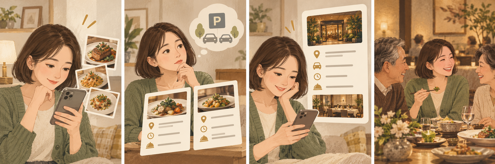

홈페이지
방문 목적과 공간
메뉴와 이용 조건
기업 담당자용 안내
메뉴와 이용 조건
기업 담당자용 안내
확인된 정보를 모으는 기준 페이지로 구축합니다.
홈페이지 구축 · AI 검색 정보 정비
고객의 방문 판단 · 기업 회식 문의
메뉴·공간·주차·예약 조건을 한곳에서 안내합니다.
검토 제안 · 가격 추후 공개
가상 일러스트 · 실제 매장 사진 아님사진이 관심을 만들고, 정확한 정보가 다음 판단을 돕습니다.
현재 운영 강점을 단정한 진단이 아니라, 소개 자료를 만드는 작업안입니다.
방문 전의 질문을 홈페이지와 안내 자료에서 먼저 해결합니다.
AI로 제작한 가상 사례입니다. 실제 고객 후기·성과 사례·매장 사진이 아닙니다.
대표 공간과 메뉴 사진으로
어떤 식사에 어울리는지 보여줍니다.
인원·메뉴·주차·예약 조건을 정리하고
확인된 공식 문의 경로로 연결합니다.
홈페이지는 소개부터 문의까지 이어지는 기준 공간으로 구축합니다.
기업 회식과 가족 식사의 질문을 구분합니다.
공간·메뉴·이용 시간·주차를 실제 운영에 맞춰 씁니다.
현재 운영하는 문의 경로를 확인한 뒤 연결합니다.
검색 질문 예시입니다. 실제 검색량이나 고객 발언으로 집계한 문장이 아닙니다.
전체 모습·좌석 배치·출입 동선과 승인된 이용 인원
현재 메뉴 구성·적용 시간·추가 비용·정산 방식
찾아오는 길·주차·예약 절차·변경 및 취소 조건
고객이 다시 검색하거나 전화해야 하는 항목을 먼저 찾습니다.
외부 통계 대신 이번 제작에 필요한 점검 기준을 제안합니다.
현재 사진·메뉴·예약 조건과 기존 문의 경로를 모읍니다.
설마중 홈페이지와 기업 담당자용 안내 자료를 만듭니다.
문의 기록을 보고 안내가 부족한 항목부터 수정합니다.
기업 단체예약을 첫 이용 목적의 우선안으로 둡니다.
작업 우선순위 제안입니다. 계약·예산·계정 권한은 별도 합의합니다.
확인된 정보를 모으는 기준 페이지로 구축합니다.
실제 관리 채널과 접근 권한부터 확인합니다.
현재 화면 비교 결과가 아닌 점검 설계입니다. 플랫폼 캡처·운영 원본 확보 후 대조합니다.
사진마다 실제 명칭·권장 인원·이용 조건을 연결합니다.
현재 메뉴와 가격 적용 조건을 매장 확인 후 안내합니다.
주차 위치·요금·예약금·변경·취소 기준을 문답으로 정리합니다.
FAQ는 현장 답변과 같은 내용이어야 합니다.
확인되지 않은 수용 인원·가격·시설·서비스는 기재하지 않습니다.
담당자가 내부에 전달할 수 있는 자료까지 함께 준비합니다.
AI로 제작한 가상 사례입니다. 실제 고객 후기·성과 사례·매장 사진이 아닙니다.
회식·접대 등 희망 목적
희망 날짜와 식사 시간
예상 인원과 변동 가능성
희망 구성과 예산 범위
독립 공간 등 필요한 조건
증빙·결제 방식과 확인 담당자
접수 항목을 정리한 뒤, 현장에서 답할 수 있는 범위를 확인합니다.
공간 사진 → 이용 인원 → 메뉴 구성 → 주차 → 예약 조건 → 공식 문의 순서로 정리합니다.
웹페이지와 한 장 안내서가 같은 내용을 전달하도록 만듭니다.
운영 가능한 모임 목적·메뉴·인원 확인 후 제작합니다. 실제 예약 가능 여부는 현장에서 확인합니다.
연령대와 동행 인원, 식사 구성, 주차와 출입 동선 등 가족 식사에 필요한 질문을 정리합니다.
실제 운영 가능한 목적부터 안내하고, 별도 행사 서비스는 확인 후 추가합니다.
가족 식사 안내 제안이며 행사 제공 여부는 미확정입니다.
① 목적 · 일정 · 인원
② 메뉴 · 공간 · 정산
③ 확인 질문 검토
④ 공식 문의 경로 연결
이번 시안은 외부 전송·정보 저장·예약 확정 기능이 없습니다. 실제 접수 기능은 별도 협의합니다.
홈페이지: 공간의 전체 모습과 이용 조건
지도 채널: 대표사진과 메뉴 확인
기업 안내서: 비교·공유에 필요한 장면
공간·음식·동선별 촬영 목록을 만들고, 필요한 가로·세로 구도를 함께 준비합니다.
촬영 횟수·보정 장수·게시 건수·수정 횟수는 협의 예정입니다.
| 채널 | 담당할 역할 | 주요 산출물 |
|---|---|---|
| 홈페이지 | 방문 판단에 필요한 정보의 기준 | 목적별 안내·메뉴·공간·FAQ |
| 네이버 플레이스 | 국내 지도·예약 정보 확인 | 사진·소개·메뉴·예약 경로 점검 |
| Google 비즈니스 프로필 | 지도 검색에서 매장 정보 확인 | 기본 정보·사진·웹사이트 연결 점검 |
| 블로그·SNS | 구체적인 이용 장면과 소식 전달 | 홈페이지 상세 안내로 이어지는 콘텐츠 |
| 현장 문의 | 조건 확인과 최종 예약 안내 | 문답 기준·담당자용 전달 자료 |
채널별 실제 운영 여부·권한·게시 범위를 확인한 후 적용합니다.
상호 · 주소 · 메뉴
공간 · 주차 · 예약
AI 검색에서 발견·이해되기 좋은 정보를 준비하는 작업입니다. 노출·순위·추천을 보장하지 않습니다.
중복을 제외한 유효 문의와 최초 응답 시간을 기록합니다.
문의 중 확정 건수·미확정 사유·취소 건수를 나눕니다.
예약 이후 실제 이용 여부와 확인 가능한 매출을 집계합니다.
확정률 = 같은 문의 집단의 확정 건수 ÷ 유효 문의 수
기준값은 미확보입니다. 유효 문의 정의·집계 기간·예약 소요일을 합의하고, 계절·프로모션·기존 고객 영향을 함께 기록합니다.
설마중 우선 실행 제안
다른 목적·채널은 결과를 보고 협의
추후 공개
운영 정보·사진·메뉴를 확인하고 문의 응대에 반영합니다.
계정·게시 일정·수정 요청을 관리하고 승인본을 반영합니다.
고객 질문·홈페이지·사진 기획·문안·측정표를 제작합니다.
사실 확인 → 시안 검토 → 지정 승인자 승인 → 반영 → 재확인
담당자와 승인자는 협의 예정입니다. 광고비·촬영 실비·예약 시스템 연동·유료 도구는 별도 협의합니다.
메뉴·공간·채널·문의 기록을 모으고 우선 질문을 정합니다.
홈페이지와 기업 안내서를 제작하고 승인된 항목부터 반영합니다.
28일까지 4주 실험을 진행하고 29–30일에 결과와 후속 범위를 정리합니다.
착수일은 계약·자료·접근 권한·승인 담당자가 갖춰진 날입니다.
일정안입니다. 승인 대기·자료 지연은 기록하고 변경 일정을 합의합니다.
| 검토 시점 | 확인할 내용 | 결정 |
|---|---|---|
| 30일 | 제작·반영 여부, 문의 누락, 현장 응대 부담 | 유지 / 수정 / 보류 |
| 60일 | 추가 운영 합의 시 문의·확정·방문 변화 | 개선 항목과 자원 재배분 |
| 90일 | 동일 기준의 추이와 실제 운영 부담 | 확대 / 유지 / 축소 / 중단 |
첫 30일 이후의 운영은 별도 합의가 전제입니다.
90일은 제안한 검토 시점이며 계약 기간이 아닙니다. 전후 변화만으로 작업의 매출 기여를 단정하지 않습니다.
문의에 답할 정보와 담당자, 게시 승인 체계가 준비되었는지 확인합니다.
반복 질문·응답 시간·확정·취소·방문을 같은 기준으로 살펴봅니다.
다른 이용 목적과 채널은 추가 자원과 작업량을 합의합니다.
결과물뿐 아니라 다음 담당자가 쓸 기준표와 문답도 남깁니다.
처음부터 모든 이용 목적을 동시에 확대하지 않습니다.
① 사용할 사진·메뉴·운영 자료 확인
② 홈페이지와 기업 회식 안내의 우선 범위 결정
③ 자료 담당자·승인자·착수 조건 합의